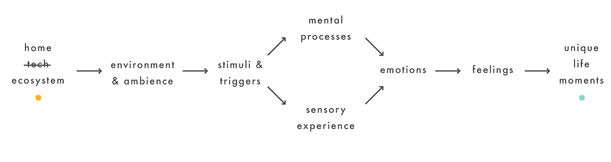

approach
insights
design proposal
branding
product
app
I’ve always found the Internet of Things to be an interesting area when it comes to thinking about what problems should be solved first. Although it has been closely associated within the realm of what is possible in technology, I feel like much of the proliferation in IoT development lack the essence of a deeper understanding of what is/isn’t important for consumers. I attempted to address this problem with my last client, Somfy, a company that is uniquely focused on B2B motorised blinds. Provided below are some of the approaches I used to solve Somfy’s problems, as well as getting a deeper insight into IoT.
approach

psychophysical flow
cognition and tech ecosystem
e.g. a simple app for reminders would allow for more cognitive resources for memory and attention
another one was done for senses but I think one giant circle is enough :)
With the rising popularity of IoT for home consumers, Somfy needed to transition itself to have more B2C presence. To give context to this problem, my brief as Somfy’s consultant was to create unique life moments with a system of connected products.
Before thinking about IoT in the home, I thought about what the technology fundamentally meant. They are part of the tech ecosystem, but in a grander scale they’re part of the home ecosystem. It’s a simple thought but a profound one when thinking about the scope of what hasn’t been done via tech. Freeing myself from the confine of what’s not possible in tech and rather thinking about all the different things we do at home that aren’t “techy” gave me more perspective.
I also realised that there was a psychophysical flow that links the home product ecosystem to the moments experienced at home. Shown below is a mapping of of how various products at home affect both cognition and senses and the layers that go in between them.
More specificity was needed in order to know what unique life moments really meant at home.
The implication of the brief was quite broad, and contextualization was needed. The project was broken down into three phases: research, frame creation, then ideation+solution.
insights
During the research and design phase, it was found out that:
- The first thing people often do when they get back home to enjoy a particular moment, lights are switched on.
- The perception of IoT is that it is complicated to set up or expensive, ironically hard to control, and that it should be simple, easy to use, and save time.
- Technology that exists nowadays often enhances a zone of a user’s cognitive abilities, but often at the expense of another (e.g. using smartphones during dinner can enable the user to communicate someone else far away, but at the expense of their divided attention with the taste of their food or the people they’re sitting with)
- Ambience is a key ingredient into the constitution of a person’s feeling of relaxation, as it enhances their sensory and mental processes.
TL;DR How can Somfy develop a product ecosystem that enhances moments but not divide it?
design proposal
branding
The branding of Somfy’s new products should firstly be friendly and approachable, while at the same time represent a clear extension of Somfy’s existing main brand. It also needs to express the product being something that expresses its involvement in the IoT space and that it enhances moments.
It was in this light that the product solution was coined “Presense”, a portmanteau of ‘Pre’ and ‘Sensing’, as well as functioning as a homonym of presence, alluding to that the product will always be there to aid you.
The roundedness of the font and shapes allude to the brand’s friendliness, supported by the semi-neutral colour palette that also functions to extend Somfy’s main brand aesthetics.
The P of the logo (“p”resense) functions as the stamp of the brand that is clear, recognizable, and alludes to the product’s function and shape.
product
Presense system
The system solution of the product revolves around the concept of having someone “always there” to adjust your ambience, instead of needing you to change it yourself. Machine learning was incorporated so that user behaviour and preferences can be learned and Somfy Presense will adjust accordingly in the future, cross-correlating this information with external data such as weather, geographical location, and sensor inputs.

TUI + Hub

TUI removed
A central hub (also a tangible user interface) acts as the learner of user behaviour and processes it all locally within itself, without giving any of this data away to third party vendors, even to Somfy’s servers.